작성일 : 2026-09-09 대상 서비스 : AskHR 사내 규정 AI 챗봇 서비스 URL: 배포 후 첨부
1. 문서 개요
1.1 목적
AskHR 웹 서비스의 화면 구성, 사용자 동작, 데이터 표시 규칙, 입력 검증, 상태 및 오류 처리를 정의한다. 기획·디자인·개발·테스트 담당자가 동일한 기준으로 화면을 이해하고 검수하는 것을 목적으로 한다.
1.2 대상 사용자
- 사내 규정과 업무 절차를 자연어로 질문하려는 임직원
- 챗봇 이용 현황과 응답 품질 지표를 확인하려는 운영 담당자
1.3 범위
- 회원가입 및 로그인
- 홈 및 최초 진입
- 새 대화
- AI 채팅 및 이전 대화 조회
- 사용량 분석 대시보드
- 인증 만료, 서버 오류, 빈 데이터 등 공통 상태
- 데스크톱 및 좁은 화면 대응
1.4 문서 표기 규칙
- 화면 ID:
SCR-번호 - 공통 영역 ID:
COM-번호 - 화면 요소 ID:
화면ID-E번호 - 상태 ID:
ST-번호 - 필수 입력값:
필수
2. 화면 목록
| 화면 ID | 화면명 | 진입 조건 | 핵심 기능 |
| SCR-001 | 로그인, 회원가입 | 비로그인 또는 세션 만료 | 이메일·비밀번호 입력, 로그인, 회원가입 팝업 진입 |
| SCR-002 | 홈·환영 화면 | 로그인 완료, 대화 없음 | 서비스 안내, 새 대화 시작 |
| SCR-003 | 새 대화 화면 | 새 대화 생성 완료 | 추천 질문 선택, 직접 질문 입력 |
| SCR-004 | 채팅 화면 | 메시지가 있는 대화 선택 | 대화 이력 조회, 질문 전송, AI 스트리밍 답변 |
| SCR-005 | 분석 대시보드 - 활동 개요 | 로그인 후 분석 메뉴 선택 | 요약 지표, 응답 시간 추이, 토큰 비교 |
| SCR-006 | 분석 대시보드 - 사용 로그 | 분석 화면에서 사용 로그 탭 선택 | 최신 사용 로그 표, 페이지 이동 |
| SCR-007 | 분석 대시보드 - 대화별 통계 | 분석 화면에서 대화별 통계 탭 선택 | 대화별 지표 표, 페이지 이동 |
3. 화면 흐름
실선은 사용자의 메뉴·버튼 이동, 점선은 취소·로그아웃·세션 만료 흐름을 뜻합니다.
4. 공통 화면 구성
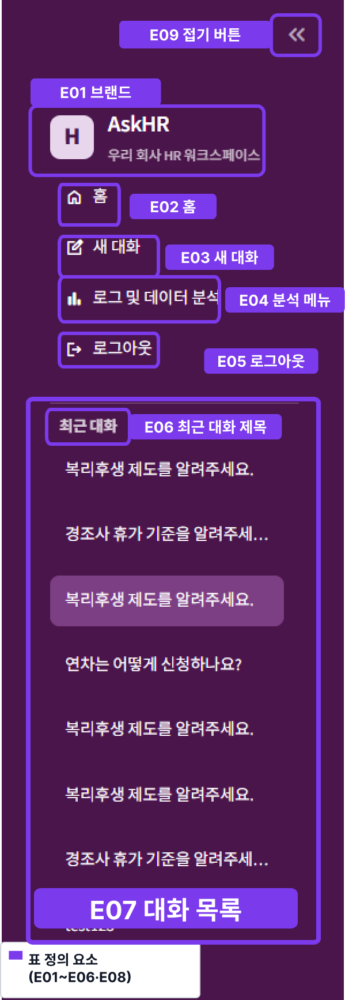
4.1 공통 사이드바 - COM-001
로그인 후 모든 주요 화면의 왼쪽에 표시한다.
| 요소 ID | 요소명 | 표시 내용 | 동작 및 규칙 |
| COM-001-E01 | 워크스페이스
브랜드 |
AskHR / 우리 회사 HR 워크스페이스 | 서비스 식별 영역이며 항상 상단에 표시한다. |
| COM-001-E02 | 홈 버튼 | 홈 아이콘 + 홈 | 채팅 기본 페이지로 이동한다. 대화가 없으면 환영 화면을 표시한다. |
| COM-001-E03 | 새 대화 버튼 | 작성 아이콘 + 새 대화 | 현재 대화가 비어 있으면 해당 대화를 재사용하고, 메시지가 있으면 새 대화를 생성한다. |
| COM-001-E04 | 분석 메뉴 | 차트 아이콘 + 로그 및 데이터 분석 | SCR-005로 이동한다. |
| COM-001-E05 | 로그아웃 버튼 | 로그아웃 아이콘 + 로그아웃 | 로그아웃 확인 팝업(COM-003)을 표시한다. 팝업에서 로그아웃을 확정하면 인증 정보와 화면 세션을 초기화하고 SCR-001로 이동한다. |
| COM-001-E06 | 최근 대화 제목 | 최근 대화 | 대화 목록 영역의 제목으로 고정 표시한다. |
| COM-001-E07 | 대화 목록 | 대화 제목 버튼 목록 | 선택 시 해당 대화의 메시지를 조회하고 SCR-004로 이동한다. 현재 선택 항목은 강조한다. |
| COM-001-E08 | 빈 목록 안내 | 대화를 시작하세요. | 대화가 하나도 없을 때 대화 목록 대신 표시한다. |
| COM-001-E09 | 사이드바 접기 버튼 | 《 아이콘 | 클릭 시 사이드바를 접고 다시 클릭하면 편다. 접힘 상태는 세션 동안 유지한다. |
4.2 공통 헤더 - COM-002
- 채팅 화면:
# {대화 제목}및 “AskHR · 사내 제도와 규정에 대해 질문하세요.” - 대화 미선택 방어 상태: 기본 제목 “HR 도우미”
- 분석 화면: “로그 및 데이터 분석” 및 “워크스페이스 인사이트 · 최근 30일의 사용 현황”
4.3 공통 표시 및 접근성 규칙
- 버튼과 입력창에는 화면에서 의미가 드러나는 텍스트 또는 아이콘 설명을 제공한다.
- 사용자 메시지와 AI 메시지는 이름, 아이콘, 배치로 구분한다.
- 필수 입력 오류는 해당 동작 직후 눈에 띄는 오류 메시지로 표시한다.
- 로딩 중에는 진행 중임을 알리는 문구 또는 스트리밍 커서를 표시한다.
- 색상만으로 선택·오류 상태를 구분하지 않는다.
- 긴 대화 제목과 긴 답변은 영역을 넘지 않도록 줄바꿈한다.
- 좁은 화면에서는 카드와 표가 읽을 수 있도록 세로 배치 또는 가로 스크롤을 허용한다.
4.4 로그아웃 확인 팝업 - COM-003
로그아웃 버튼(COM-001-E05)을 눌렀을 때 표시하는 모달 팝업이다.
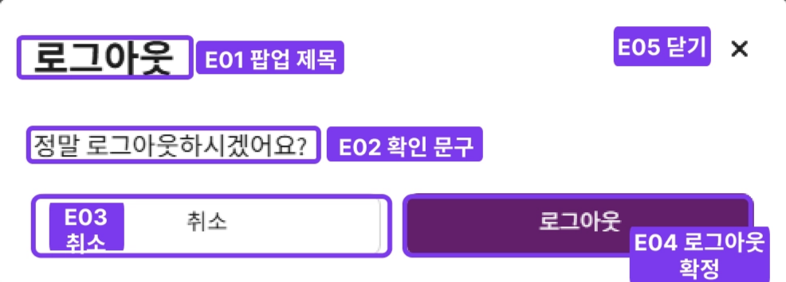
| 요소 ID | 요소명 | 표시 내용 | 동작 및 규칙 |
| COM-003-E01 | 팝업 제목 | 로그아웃 | 모달 상단에 고정 표시한다. |
| COM-003-E02 | 확인 문구 | 정말 로그아웃하시겠어요? | 로그아웃 실행 전 재확인을 유도한다. |
| COM-003-E03 | 취소 버튼 | 취소 | 팝업을 닫고 현재 화면을 유지한다. |
| COM-003-E04 | 로그아웃 확정 버튼 | 로그아웃 | 인증 정보와 화면 세션을 초기화하고 SCR-001로 이동한다. |
| COM-003-E05 | 닫기 버튼 | × 아이콘 | 팝업을 닫고 현재 화면을 유지한다. 취소 버튼과 동일하게 동작한다. |
5. 상세 화면 설계
SCR-001 로그인, 회원가입
- 최초 접속
- 사용자가 로그아웃한 경우
- 인증 토큰이 만료되거나 유효하지 않은 경우
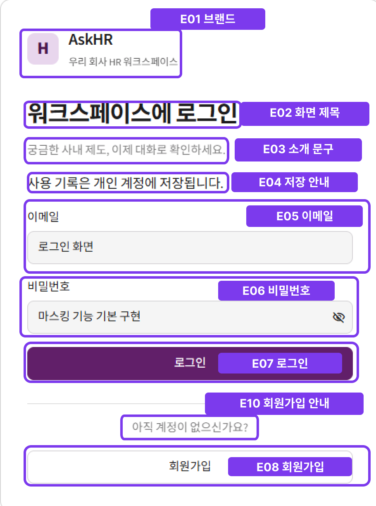
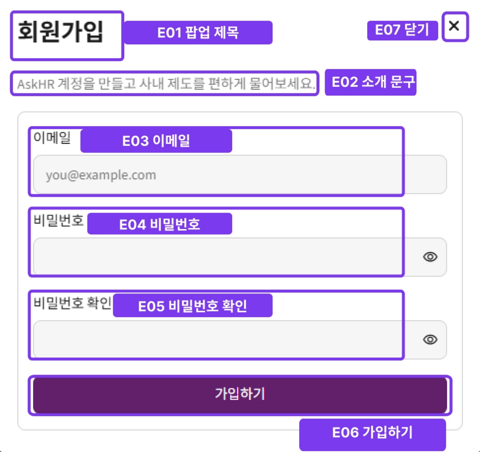
화면 구성 요소
| 요소 ID | 요소명 | 표시 및 입력 규칙 | 동작 |
| SCR-001-E01 | 브랜드 영역 | H 마크, AskHR, 우리 회사 HR 워크스페이스 | 서비스를 식별한다. |
| SCR-001-E02 | 화면 제목 | 워크스페이스에 로그인 | 현재 화면 목적을 안내한다. |
| SCR-001-E03 | 소개 문구 | 궁금한 사내 제도, 이제 대화로 확인하세요. | 서비스 가치를 안내한다. |
| SCR-001-E04 | 저장 안내 | 사용 기록은 개인 계정에 저장됩니다. | 로그인 필요 이유를 안내한다. |
| SCR-001-E05 | 이메일 입력 | 필수, placeholder: you@example.com | 로그인·회원가입 계정 식별자로 사용한다. |
| SCR-001-E06 | 비밀번호 입력 | 필수, 기본 마스킹, 표시/숨김 버튼 제공 | 로그인·회원가입 인증 정보로 사용한다. |
| SCR-001-E07 | 로그인 버튼 | 주요 버튼 | POST /auth/login 호출. 성공 시 로그인 상태로 전환한다. |
| SCR-001-E08 | 회원가입 버튼 | 보조 버튼, 로그인 버튼과 별도 영역에 표시 | 회원가입 팝업(SCR-001-M01)을 표시한다. |
| SCR-001-E09 | 상태 메시지 | 경고 또는 오류 문구 | 필수값 누락, 인증 실패, 가입 후 자동 로그인 실패, 세션 만료를 안내한다. |
| SCR-001-E10 | 회원가입 안내 문구 | 아직 계정이 없으신가요? | 회원가입 버튼 위에 표시해 신규 사용자에게 가입 경로를 안내한다. |
회원가입 팝업 - SCR-001-M01
회원가입 버튼(SCR-001-E08)을 눌렀을 때 표시하는 모달 팝업이다.
| 요소 ID | 요소명 | 표시 및 입력 규칙 | 동작 |
| SCR-001-M01-E01 | 팝업 제목 | 회원가입 | 모달 상단에 고정 표시한다. |
| SCR-001-M01-E02 | 소개 문구 | AskHR 계정을 만들고 사내 제도를 편하게 물어보세요. | 가입 목적을 안내한다. |
| SCR-001-M01-E03 | 이메일 입력 | 필수, placeholder: you@example.com | 가입 계정 식별자로 사용한다. |
| SCR-001-M01-E04 | 비밀번호 입력 | 필수, 기본 마스킹, 표시/숨김 버튼 제공 | 가입 인증 정보로 사용한다. |
| SCR-001-M01-E05 | 비밀번호 확인 입력 | 필수, 기본 마스킹, 표시/숨김 버튼 제공 | 비밀번호와 값이 다르면 오류를 표시한다. |
| SCR-001-M01-E06 | 가입하기 버튼 | 주요 버튼 | POST /auth/signup 호출. 토큰 수신 시 팝업을 닫고 즉시 로그인 상태로 전환한다. |
| SCR-001-M01-E07 | 닫기 버튼 | × 아이콘 | 팝업을 닫고 SCR-001로 돌아간다. 입력값은 초기화한다. |
입력 검증 및 상태
- 이메일 혹은 비밀번호가 비어 있으면 “이메일과 비밀번호를 모두 입력하세요.”를 표시한다.
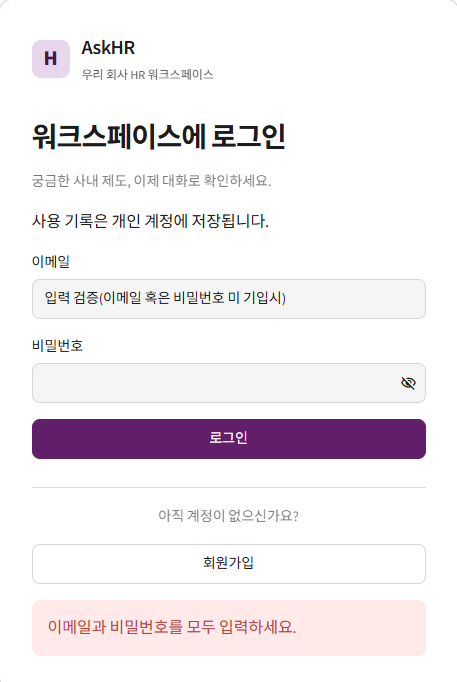
- 로그인 또는 가입 API가 실패하면 서버에서 변환된 사용자 안내 문구를 표시한다.
- 세션 만료로 이동한 경우 “사용시간이 만료되었습니다. 새로 로그인하세요.” 또는 “로그인이 만료되었습니다. 기록은 그대로 있으니 다시 로그인해 주세요.”를 상단에 표시한다.
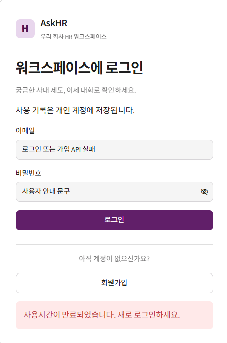
- 성공 시 access token과 이메일을 세션에 저장하고 로그인 후 화면을 다시 그린다.
SCR-002 홈 화면
화면 목적
로그인한 사용자에게 서비스 사용 방법을 설명하고 첫 대화를 시작하도록 안내한다.
진입 조건
로그인에 성공했으며 저장된 대화가 없는 경우.
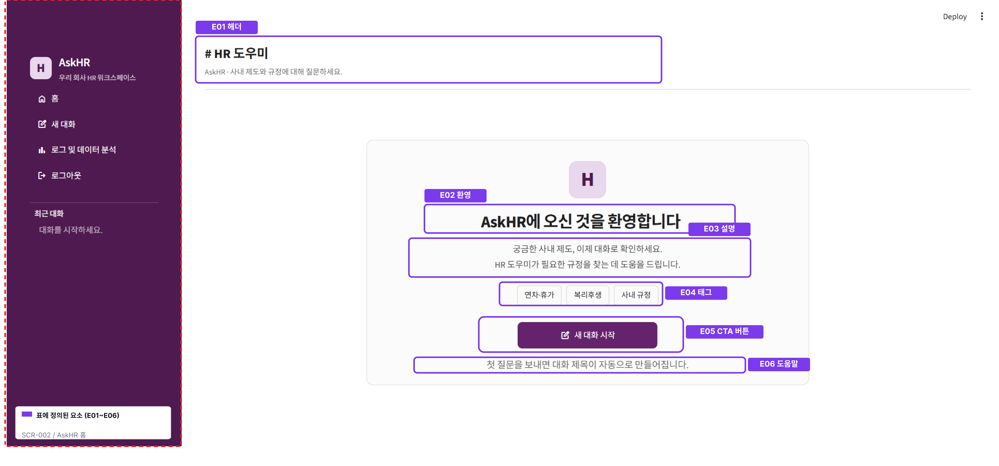
화면 구성 요소
| 요소 ID | 요소명 | 표시 내용 | 동작 및 규칙 |
| SCR-002-E01 | 페이지 헤더 | HR 도우미 / AskHR · 사내 제도와 규정에 대해 질문하세요. | 현재 서비스 영역을 안내한다. |
| SCR-002-E02 | 환영 인사 | AskHR에 오신 것을 환영합니다 | 첫 방문 사용자에게 표시한다. |
| SCR-002-E03 | 서비스 설명 | HR 도우미가 필요한 규정을 찾는 데 도움을 드립니다. | 서비스의 사용 목적을 설명한다. |
| SCR-002-E04 | 주제 태그 | 연차·휴가 / 복리후생 / 사내 규정 | 질문 가능한 대표 영역을 보여준다. |
| SCR-002-E05 | 새 대화 시작 버튼 | 주요 CTA | 대화를 생성하고 SCR-003으로 이동한다. |
| SCR-002-E06 | 도움말 | 첫 질문을 보내면 대화 제목이 자동으로 만들어집니다. | 자동 제목 생성 규칙을 안내한다. |
상태 및 예외
- 새 대화 생성 API 실패 시 오류를 버튼 아래에 표시하고 현재 화면을 유지한다.
- 대화 목록 조회 중 세션이 만료되면 SCR-001로 이동한다.
- 다른 오류가 발생하면 사용자에게 원인과 재시도 방향을 표시한다.
SCR-003 새 대화 화면
화면 목적
새 대화의 시작을 알리고 추천 질문 또는 직접 입력으로 첫 메시지를 전송하게 한다.
진입 조건
홈 또는 사이드바에서 새 대화를 생성한 뒤 해당 대화에 메시지가 없는 경우
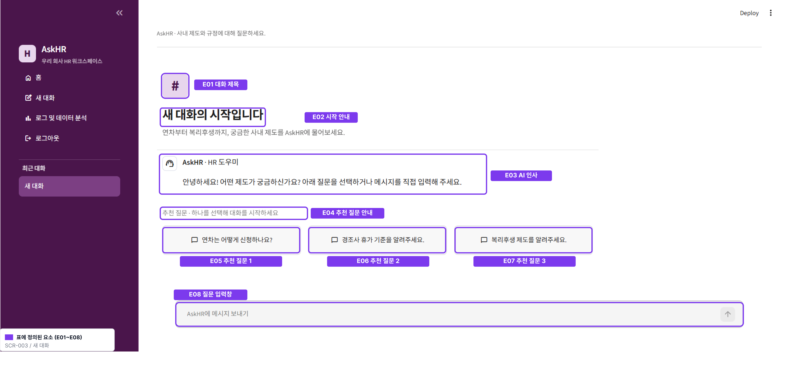
화면 구성 요소
| 요소 ID | 요소명 | 표시 내용 | 동작 및 규칙 |
| SCR-003-E01 | 대화 제목 | # 새 대화 | 첫 질문 전까지 기본 제목으로 표시한다. |
| SCR-003-E02 | 시작 안내 | 새 대화의 시작입니다 | 이전 대화와 분리된 새 맥락임을 알린다. |
| SCR-003-E03 | AI 인사 메시지 | 안녕하세요! 어떤 제도가 궁금하신가요? | AskHR · HR 도우미 이름과 아이콘으로 표시한다. |
| SCR-003-E04 | 추천 질문 안내 | 추천 질문 · 하나를 선택해 대화를 시작하세요 | 추천 질문 버튼 위에 표시한다. |
| SCR-003-E05 | 추천 질문 1 | 연차는 어떻게 신청하나요? | 선택 시 질문을 즉시 전송한다. |
| SCR-003-E06 | 추천 질문 2 | 경조사 휴가 기준을 알려주세요. | 선택 시 질문을 즉시 전송한다. |
| SCR-003-E07 | 추천 질문 3 | 복리후생 제도를 알려주세요. | 선택 시 질문을 즉시 전송한다. |
| SCR-003-E08 | 질문 입력창 | placeholder: AskHR에 메시지 보내기 | Enter 또는 전송 동작으로 질문을 보낸다. 빈 문자열은 전송하지 않는다. |
데이터 및 상태 규칙
- 추천 질문을 누르면 선택값을 임시 보관한 뒤 화면 갱신 후 전송한다.
- 질문 전송 즉시 사용자 메시지를 먼저 표시한다.
- 첫 답변이 완료되면 대화 제목은 서버의 자동 제목 결과를 따른다.
- 현재 빈 대화에서 다시 “새 대화”를 선택하면 중복 대화를 만들지 않고 현재 빈 대화를 유지한다.
SCR-004 채팅 화면
화면 목적
사용자가 사내 규정을 질문하고, 저장된 대화 이력과 AI 답변을 확인한다.
진입 조건
최근 대화를 선택하거나 새 대화에서 첫 질문을 전송한 경우.
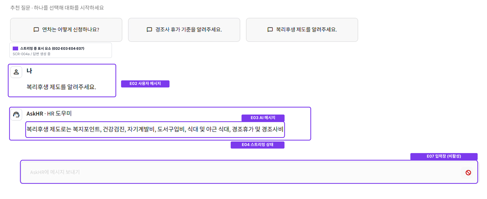
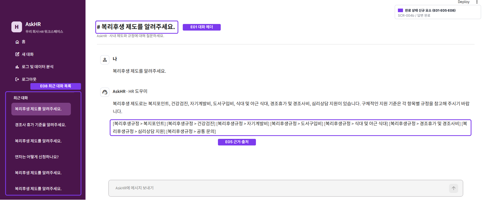
화면 구성 요소
| 요소 ID | 요소명 | 표시 내용 | 동작 및 규칙 |
| SCR-004-E01 | 대화 헤더 | # {대화 제목} | 현재 선택한 대화 제목을 표시한다. |
| SCR-004-E02 | 사용자 메시지 | 나 + 질문 내용 | 사용자 아이콘과 함께 시간순으로 표시한다. |
| SCR-004-E03 | AI 메시지 | AskHR · HR 도우미 + 답변 내용 | AI 아이콘과 함께 사용자 메시지 아래에 표시한다. |
| SCR-004-E04 | 답변 스트리밍 상태 | 생성되는 텍스트 및 진행 커서 | 응답 내역들을 도착한 순서대로 이어 붙인다. |
| SCR-004-E05 | 근거·출처 | 참고 규정명 또는 추가 확인 안내 | 답변의 근거를 확인할 수 있도록 AI 답변 안에 표시한다. |
| SCR-004-E06 | 맥락 구분선 | 시스템 메시지 내용 | 대화 맥락이 끊긴 지점을 말풍선 대신 구분선과 설명으로 표시한다. |
| SCR-004-E07 | 질문 입력창 | AskHR에 메시지 보내기 | 새 질문을 현재 conversation_id로 전송한다. |
| SCR-004-E08 | 최근 대화 목록 | 대화 제목 목록 | 선택 시 해당 대화를 강조하고 메시지 이력을 다시 조회한다. |
처리 흐름
- 현재 대화의 메시지 목록을 조회한다.
- 질문을 입력하거나 추천 질문을 선택한다.
- 사용자 메시지를 화면에 표시한다.
POST /conversations/{conversation_id}/chat을 호출한다.- AI 답변을 스트리밍으로 표시한다.
- 응답 완료 후 화면을 다시 불러와 저장된 메시지와 갱신된 제목을 표시한다.
상태 및 오류
- 백엔드 연결 실패: “백엔드 서버에 연결할 수 없습니다.”를 표시한다.
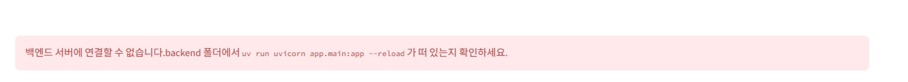
- 응답 시간 초과: “응답이 너무 오래 걸려 중단했습니다. 다시 시도해 보세요.”를 표시한다.
- 일반 요청 실패: 상태 코드를 포함한 실패 메시지를 표시한다.
- AI 요청 한도 초과: 일일 요청 횟수 소진 안내를 표시한다.
- 답변 생성 실패: 실패한 질문을 세션에 보관해 재입력 부담을 줄인다.
- 세션 만료: 인증 정보를 초기화하고 SCR-001로 이동하며 기존 기록이 유지됨을 안내한다.
- 대화 목록은 있으나 선택값이 없는 비정상 상태: “대화를 고르세요.”와 선택 방법을 표시한다.
SCR-005 분석 대시보드 - 활동 개요
화면 목적
최근 30일간 전체 사용자 대화의 응답 수, 지연시간, 토큰 사용량을 한눈에 보여준다.
진입 조건
로그인한 사용자가 사이드바에서 “로그 및 데이터 분석”을 선택한다.
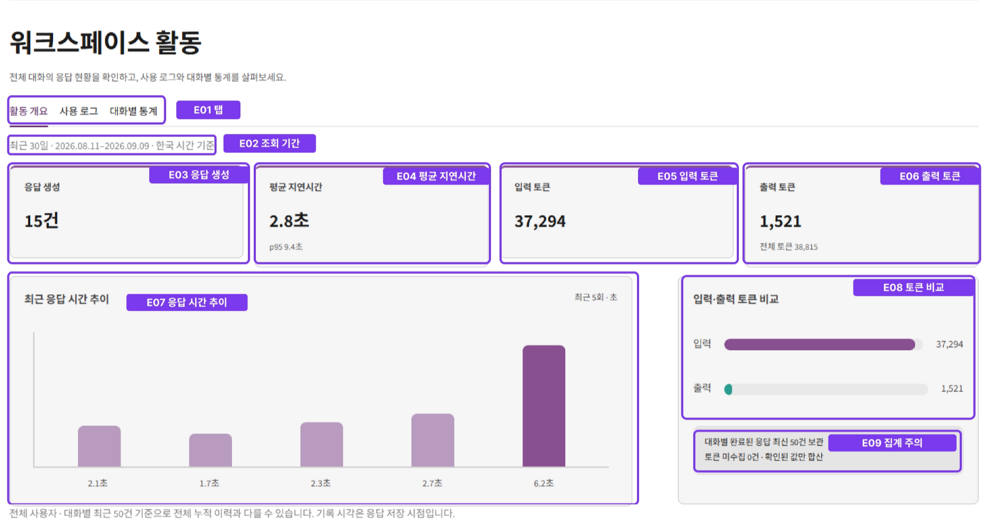
조회 기준
- 기본 기간: 한국 시간 기준 오늘을 포함한 최근 30일
- 데이터 범위: 전체 사용자
- 저장 범위: 대화별 완료된 응답 최신 50건
- 요약 API:
GET /analytics/summary - 로그 API:
GET /analytics/logs
화면 구성 요소
| 요소 ID | 요소명 | 표시 규칙 |
| SCR-005-E01 | 탭 | 활동 개요 / 사용 로그 / 대화별 통계 |
| SCR-005-E02 | 조회 기간 | 최근 30일 실제 예시
( |
| SCR-005-E03 | 응답 생성 카드 | request_count를 N건으로 표시한다. |
| SCR-005-E04 | 평균 지연시간 카드 | 평균을 초 단위 소수점 한 자리, 보조 문구에 p95를 표시한다. |
| SCR-005-E05 | 입력 토큰 카드 | prompt_tokens 합계를 천 단위 구분으로 표시한다. |
| SCR-005-E06 | 출력 토큰 카드 | response_tokens 및 전체 토큰을 표시한다. |
| SCR-005-E07 | 응답 시간 추이 | 최근 최대 5건의 latency_ms를 막대그래프로 표시한다. |
| SCR-005-E08 | 토큰 비교 | 입력·출력 토큰의 비율과 값을 가로 막대로 표시한다. |
| SCR-005-E09 | 집계 주의 문구 | 최신 50건 기준, 토큰 미수집 건수, 확인된 값만 합산함을 표시한다. |
상태 및 오류
- 로딩: “사용량을 불러오는 중입니다…” 스피너를 표시한다.
- 로그 없음: 그래프 영역에 “선택한 기간의 응답 기록이 없습니다.”를 표시한다.
- null 지표: 대시 기호
—로 표시한다. - 잘못된 로그: 제외 건수를 경고로 표시한다.
- 데이터 조회 실패: “분석 데이터를 불러오지 못했습니다.”와 잠시 후 다시 열라는 안내를 표시한다.
- 비로그인 접근: 로그인 후 이용 가능하다는 안내를 표시하거나 로그인 화면으로 이동한다.
SCR-006 분석 대시보드 - 사용 로그
화면 목적
최근 사용 로그를 최신순으로 조회하고 응답별 지연시간과 토큰 사용량을 확인한다.
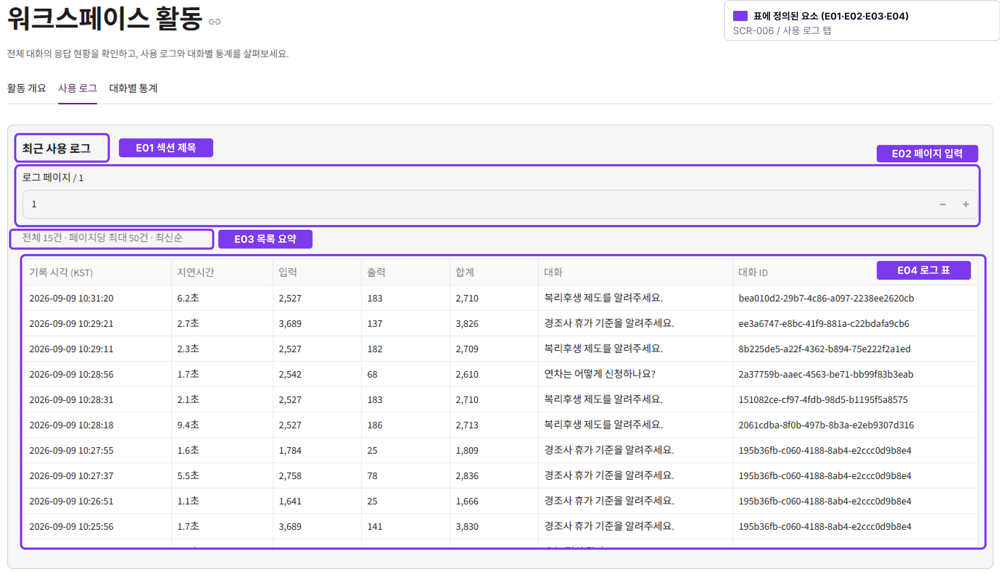
화면 구성 요소
| 요소 ID | 요소명 | 표시 및 동작 규칙 |
| SCR-006-E01 | 섹션 제목 | 최근 사용 로그 |
| SCR-006-E02 | 페이지 입력 | 로그 페이지 / {전체 페이지}, 최소 1, 최대 전체 페이지 |
| SCR-006-E03 | 목록 요약 | 전체 N건 · 페이지당 최대 50건 · 최신순 |
| SCR-006-E04 | 로그 표 | 기록 시각(KST), 지연시간, 입력, 출력, 합계, 대화, 대화 ID |
| SCR-006-E05 | 빈 데이터 안내 | 선택한 기간에 저장된 로그가 없습니다. |
데이터 표시 규칙
- 기록 시각은
YYYY-MM-DD HH:mm:ssKST로 변환한다. - 지연시간은 초 단위 소수점 한 자리로 표시한다.
- 토큰 값이 null이면
—로 표시한다. - 2페이지부터 offset은
(페이지 - 1) × 50으로 계산한다. - 전체 페이지 수가 줄어 현재 페이지를 초과하면 마지막 유효 페이지로 보정한다.
SCR-007 분석 대시보드 - 대화별 통계
화면 목적
대화별 요청 수와 응답 품질·비용 관련 지표를 비교한다.
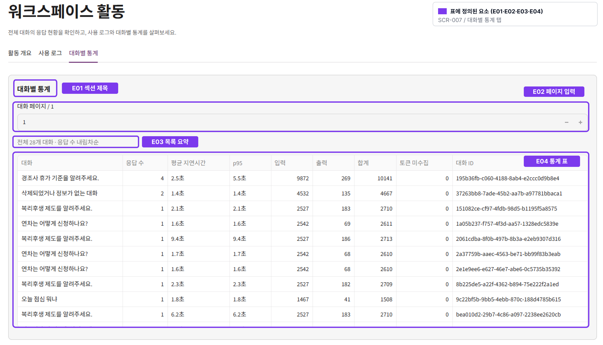
화면 구성 요소
| 요소 ID | 요소명 | 표시 및 동작 규칙 |
| SCR-007-E01 | 섹션 제목 | 대화별 통계 |
| SCR-007-E02 | 페이지 입력 | 대화 페이지 / {전체 페이지}, 최소 1, 최대 전체 페이지 |
| SCR-007-E03 | 목록 요약 | 전체 N개 대화 · 응답 수 내림차순 |
| SCR-007-E04 | 통계 표 | 대화, 응답 수, 평균 지연시간, p95(백분위 95),
입력, 출력, 합계, 토큰 미수집, 대화 ID |
데이터 표시 규칙
- 기본 정렬은 응답 수 내림차순이다.
- 지연시간은 초 단위 소수점 한 자리로 표시한다.
- 페이지당 최대 50개 대화를 표시한다.
- 삭제된 대화의 잔여 로그는 “삭제되었거나 정보가 없는 대화”로 표시할 수 있다.
- 토큰 수집이 누락된 응답 개수는 별도 열로 표시한다.
6. 공통 상태 및 오류 설계
| 상태 ID | 발생 조건 | 사용자 메시지 또는 표현 | 후속 동작 |
| ST-001 | 필수값 누락 | 이메일과 비밀번호를 모두 입력하세요. | 입력값을 유지하고 같은 화면에서 수정하게 한다. |
| ST-002 | 로그인 세션 만료 | 사용시간이 만료되었습니다. 새로 로그인하세요. | 인증 관련 세션만 초기화하고 SCR-001로 이동한다. |
| ST-003 | 채팅 중 인증 만료 | 로그인이 만료되었습니다. 기록은 그대로 있으니 다시 로그인해 주세요. | 기존 대화가 보존됨을 알리고 SCR-001로 이동한다. |
| ST-004 | 백엔드 연결 실패 | 백엔드 서버에 연결할 수 없습니다. | 화면과 사용자 입력을 유지하고 재시도를 유도한다. |
| ST-005 | 응답 시간 초과 | 응답이 너무 오래 걸려 중단했습니다. 다시 시도해 보세요. | 실패 질문을 보관한다. |
| ST-006 | AI 요청 한도 초과 | 오늘 쓸 수 있는 AI 요청 횟수를 다 썼습니다. | 일일 한도임을 안내하고 추가 전송을 중단한다. |
| ST-007 | 분석 데이터 로딩 | 사용량을 불러오는 중입니다… | 스피너를 표시하고 중복 요청을 방지한다. |
| ST-008 | 분석 로그 없음 | 선택한 기간의 응답 기록이 없습니다. | 빈 차트·표 대신 안내를 표시한다. |
| ST-009 | 분석 API 실패 | 분석 데이터를 불러오지 못했습니다. 잠시 후 대시보드를 다시 열어 주세요. | 현재 화면을 유지하고 재진입을 안내한다. |
| ST-010 | 잘못된 로그 제외 | 형식이 올바르지 않은 로그 N건은 집계에서 제외되었습니다. | 유효한 로그만으로 지표를 표시한다. |
7. 권한 및 데이터 기준
- 로그인·회원가입을 제외한 모든 서비스 화면은 인증된 사용자만 접근한다.
- 현재 MVP에서 분석 화면은 관리자 전용이 아니며 로그인 사용자 모두 접근할 수 있다.
- 질문과 답변은 대화 단위로 저장하고 재접속 시 다시 조회한다.
- 사용량 분석에는 질문 원문, 답변 본문, 이메일, 인증 토큰, 쿠키를 표시하지 않는다.
- 분석 화면은 대화 ID를 표시하므로 제출본에 실제 운영 데이터가 포함될 경우 식별값 마스킹 여부를 검토한다.
- 로그아웃 또는 세션 만료 시 access token, 사용자 이메일, 선택 대화, 대기 질문, 실패 질문을 초기화한다.
8. 화면 크기 기준
- 기본 설계 기준: 데스크톱 1440×900
- 넓은 화면: 사이드바와 본문을 동시에 표시한다.
- 좁은 화면: 분석 카드와 패널은 세로 배치하고 표는 읽을 수 있는 형태로 스크롤을 허용한다.
- 채팅 입력창은 메시지 열람 중에도 쉽게 접근 가능한 하단 위치를 유지한다.